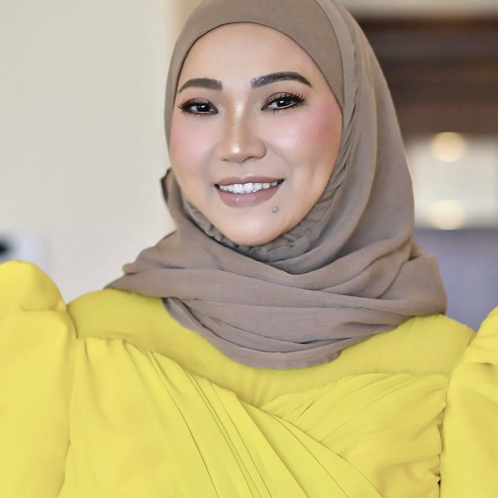

Featured Article
Read more about Annaliza's work, leadership, and impact in global education.
Read the article
Annaliza Diet is an education entrepreneur, institutional leader, and community advocate based in Doha, Qatar — with more than two decades devoted to one defining purpose: creating opportunities that transform lives through education.
For Annaliza Diet, education is more than an industry — it is a responsibility. Her journey spans education, entrepreneurship, professional training, institutional development, international partnerships, and community leadership.
As the Founder and CEO behind educational organizations serving children, professionals, and adult learners, Annaliza has transformed ideas into institutions and challenges into opportunities for growth. Her leadership combines an entrepreneurial mindset with a deeply human approach — building organizations not simply to succeed, but to create meaningful and lasting impact.
Annaliza's entrepreneurial journey is anchored in the belief that education must evolve with the world. She has founded and developed educational initiatives serving learners from early childhood through professional and executive education.
A professional education and training institution committed to developing career-ready skills, professional competencies, and lifelong learning opportunities. As Founder and CEO, Annaliza leads its strategic direction, international development, and institutional partnerships.
An educational community built around academic development, confidence, communication, character, and individual learner progress — placing the partnership between students, educators, and parents at the heart of meaningful education.
An early childhood education initiative built on a simple philosophy: great futures begin with strong foundations — a nurturing environment where young learners explore, communicate, and discover the joy of learning.
Annaliza is actively building bridges between educational institutions, universities, professional organizations, and learners internationally — developing pathways that allow students and professionals to access education beyond geographical boundaries.
The vision is clear: bring world-class opportunities closer to the people who need them.
Annaliza's approach to leadership has been shaped by years of building organizations, managing challenges, developing teams, working with families, and creating partnerships across cultures. She believes powerful leadership begins with purpose.
Success becomes meaningful when the opportunities we create allow other people to succeed.


Annaliza's commitment to leadership extends beyond education. Through IAM Filipina, she has helped create a platform for women in Qatar to connect, mentor, develop, and celebrate one another — bringing women together through mentorship, leadership conversations, empowerment programs, and community activities.
When one woman rises, she should create space for another woman to rise with her.
A Filipina entrepreneur, educator, and community leader based in Qatar, Annaliza Diet (MA, MBA, CIPT, PhD Candidate) has emerged as a formidable force in global education and women’s empowerment. With influence that spans continents, she has built more than institutions — she has built pathways for opportunity.
Read more about Annaliza's work, leadership, and impact in global education.
Read the article
Annaliza is the Founder of IAMFILIPINA, where she leads initiatives that empower Filipina professionals in Qatar. She also manages the Academia Scholarship Program and serves as Co-Founder of Kindness Club Doha. Through IAMFILIPINA, she promotes Corporate Social Responsibility through mentorship, advocacy, and community-driven programs.
Visit IAMFILIPINAIAMFILIPINA is a growing platform dedicated to inspiring, motivating, and supporting Filipina professionals in Qatar. It reflects Annaliza’s belief that meaningful leadership extends beyond personal success — it creates opportunities for others to grow, belong, and thrive.
Its work is rooted in Corporate Social Responsibility, with a strong emphasis on mentorship, advocacy, uplifting women, and building a stronger community through education, generosity, and service.
Throughout her journey, Annaliza has encountered talented people whose ambitions exceeded the opportunities available to them — strengthening her commitment to building educational pathways that balance quality, accessibility, flexibility, and global recognition.
Her work particularly seeks to create opportunities for young learners, working professionals, overseas Filipino families, women, and individuals pursuing professional advancement.
Annaliza welcomes strategic conversations with institutions and organizations that share a commitment to education, innovation, leadership, and human development.
International academic pathways, articulation opportunities, and collaborative programs.
School, training center, program, and institutional development.
Leadership, management, workforce development, and customized professional training.
Cross-border education partnerships and market development.
Education, mentorship, women empowerment, and social initiatives.
Annaliza brings the perspective of an entrepreneur who has experienced education not only from the classroom, but also from the boardroom. Her speaking engagements draw from practical experience in building institutions, developing people, navigating organizational challenges, creating international partnerships, and leading diverse communities.
Every institution begins as an idea. Every partnership begins with a conversation. Every transformation begins when someone decides that something better is possible.
Annaliza's journey continues to evolve — from professional education and school development to international partnerships, entrepreneurship, mentorship, and global education opportunities. The next chapter is focused on something even greater: building an international education ecosystem where opportunity has no borders.
Creating learning environments and professional programs that prepare people for their next stage of growth.
Transforming educational ideas into sustainable institutions and opportunities.
Connecting organizations and educational institutions across countries and cultures.
Creating platforms where women can develop their confidence, leadership, and networks.
Using education and leadership as instruments for meaningful social impact.
"I have learned that building something meaningful is never a straight journey. There will be challenges, difficult decisions, unexpected changes, and moments when your vision will be tested. But I have also learned that purpose gives us the courage to continue.
Education gave me the opportunity to build. Entrepreneurship taught me to take risks. Leadership taught me responsibility. And the people I have met throughout my journey taught me that our greatest achievements are rarely achieved alone.
I want the institutions and communities I build to become places where people discover possibilities they may not have imagined for themselves. There is still much more to build, more people to empower, and more opportunities to create. And this journey is only beginning."
A curated collection of Annaliza's speaking engagements, international partnerships, education conferences, community leadership, institutional milestones, awards, media features, and official events.
View media & galleryGreat partnerships begin with shared vision. Annaliza welcomes conversations with universities, educational institutions, government and community organizations, corporations, investors, international education providers, and leaders seeking meaningful collaboration.
Start a conversationAnnaliza Diet — Founder & CEO
Edupreneur · Education Leader · Strategic Partner
Doha, Qatar
For strategic partnerships, speaking engagements, education consulting, international collaborations, corporate projects, and media inquiries.